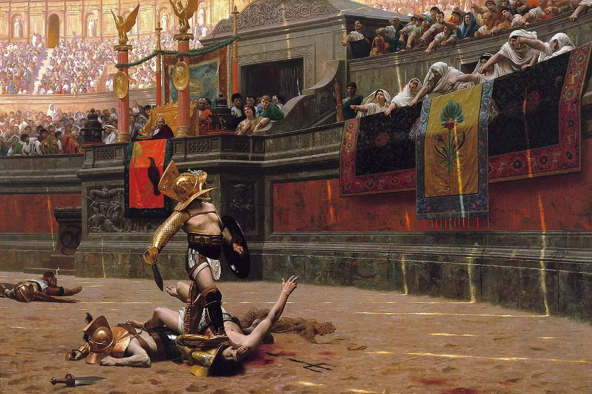
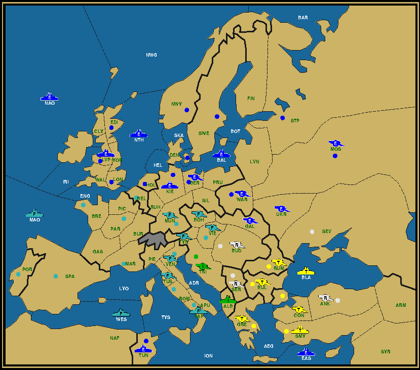
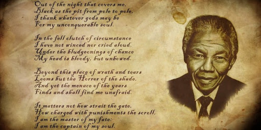
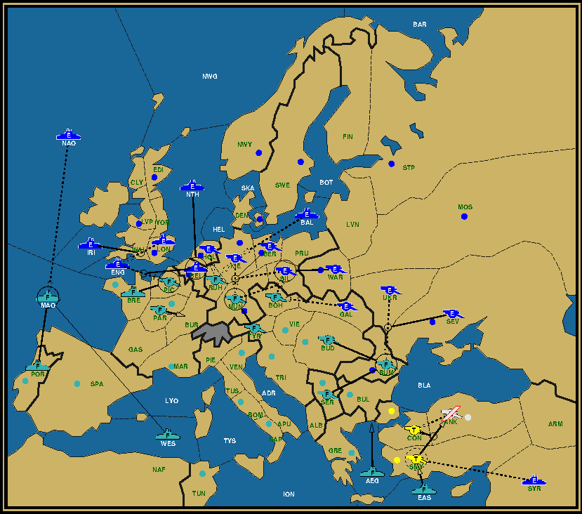

|

"Thumbs Down": Vestal Virgins directing the victorious gladiator to kill his opponent (Jean-Léon Gérôme, 1872) Part IDiplomacy is not an easy game. Even for those who know the rules well and can come up with all sorts of variations in any given situation (or rather especially for those people), there are perplexing positions where any set of moves can be countered with a different set of counter moves; where the wrong choice (or rather the right counter plan) can mean the difference between building and disbanding, between progress and decline. This gets further compounded in no press games, where the inability to communicate and gauge or guide the opponent's thoughts is severely limited. More than once you will arrive at a rock-scissors-paper decision point, where throwing dice seems like a valid, if not the optimal strategy. And yet you won't actually throw the dice, as enticing as it might seem. After all, it does give you something else to blame (the hand of faith?) when things do go terribly wrong. But you want to take responsibility, right? Even though it might all go down the sewers, you want to hold up the hope for that small chance that it might all go as expected, to allow to make the claim that it was through your own perspicacity that you vanquished the opposition. Hope is good, but how do you survive that long interval until the deadline without going mad? You just put your own intelligence on the line. The temptation of choosing the other option, what you until then had considered the lesser option, keeps growing. Will you wield? But wait, there might still be a better option available (or is it just yet another alternative produced by your feverish brain?). Let's rethink this... Quite recognizable, right? How to cope with it? With the right attitude. Let me give you one anecdote. Part II
Game par-bud, After Fall 1913 It's a no-press game on the Standard map played on the UKDP DPjudge (still exists!) in which I took over as France. At that point France and England were gobbling up the rest of the board with Russia and Turkey as the last hold-outs in the area between Austria and Turkey. It was clear from the start that it would either come to an amicable 2-way split or a showdown between the two frontrunners. With two fleets in the Mediterranean and a massive amount of armies in Russia, England looked like being in the driver's seat. But France had easier access to the remaining centers. Notwithstanding the internecine fighting between the two, Russia and Turkey did an excellent job guarding Armenia. Meanwhile France expertly drove a wig between the two English fleets in the Med by occupying the Ionian, leaving one fleet to wilt in Tunis and pushing the other one to Syria, all while still pretending to be friends. But when I next chased out Tunis (in what I thought was a fair trade for Belgium), England revolted. Turkey and Russia were already reduced to just the Turkish home centers, but with that English fleet in Syria they were virtually impermeable to attack if they just held and supported each other. I thus shifted my focus to the long frontier between England and me that divided Europe in two, running all the way from Belgium over Munich to Rumania. I needed all of these three centers to win. How well was I doing? Let's check. Part III Game par-bud, After Spring 1918 It's the Fall of 1918. France has entered Munich (lost the previous year) and Rumania, but was driven out of Galicia. Vienna was exposed. Rumania was threatened by three armies, but could be protected by the same amount. Munich was the biggest problem, with three armies directly threatening it and two more armies able to cut two of the defenders. A simple hold and support would fail against a full-on attack. I had however the option to use my two flank defenders, Ruhr and Bohemia, to attack and cut two of the three direct attackers, Kiel and Silesia, thereby completely securing Munich thanks to Tyrolia's uncuttable support. But that would leave Vienna exposed. There were three of my units next to Vienna, but all of them had a task in either defending Munich or Rumania. And if Vienna got pierced, the same story would repeat itself with Trieste. I would have to scramble and almost certainly lose Munich and Rumania in the resulting fight. So should I pull one defender away to protect Vienna, thereby risking to lose one of the other centers? There was no single best answer. I would always risk at least one center and all of them had their demerits. As I was tossing and turning this over in my head at night in bed, another question formed itself: Why do I get so anxious about this? What is there at stake? Missing out on a solo in a non-ranked game where I came in as a replacement? My perceived standing with players I only know through the Judge and some e-mails? Moreover, what do they have at stake? Specifically, how is England going to feel in a game where he had done everything according to the book, whether crossing the stalemate line in sufficient numbers to claim a solo himself (a rare feat for an English player in a no-press game), or working hard towards a two-way with France who had been a one-time adversary and certainly had been at his mercy a few times before? What is a healthy attitude for either of us? How do we protect our honour if that's what's at stake? How do we explain our actions if they turn out wrong? Part IVOne possible answer to that came a few days later in the form of a movie I was watching: "Invictus". It tells the story of the first Rugby World Cup, played in South-Africa, through the eyes of François Pienaar, the team captain of the home team, and Nelson Mandela, freshly out of prison and in his first year as the country's first black president after decades of fighting the Apartheid system. He made rugby, a traditionally white sport and therefore hated by the black population, a symbol of his reconciliation campaign. 
"Invictus" (William Ernest Henley, 1875) and Nelson Mandela The day before the finale against New Zealand, the sky high favorites, he gives Pienaar a poem, "Invictus", the title of the movie. He tells that it helped him surviving the long years in prison. The poem is a classic in English literature about the virtue of never giving in, no matter how harsh life treats you. It's an emotional moment that instills a bond between the two men, enemies not before long, before the historical game that ends with a stunning victory for the home team. It was a good movie played at a good time, just days before the start of last year's Rugby World Cup in Japan, where I live. TV broadcast programming at its subtlest. It was entertaining enough to wake my curiosity about the veracity of the events. So I went to Wikipedia to learn that there had indeed been a poem exchanged, but that that poem was not "Invictus", but "The Man in the Arena", an extract from a speech by Theodore Roosevelt. That Man in the Arena is an archetype of the player. Not the spectator nor the bookie or the coach, who all have their own opinion of the best way to play, but the player himself. In the end it's the player who makes the decisions, sometimes good, sometimes bad, brilliant or lopsided. He's the one risking limb and loin (quite literally in the case of rugby), who basks in the glory or takes the fall. He is the Player. No one else has a right to judge him, because they're not in his shoes. He only needs to consider himself. Talking of taking a load off a (broad) shoulder, that is a great way to inspire calm. Hat off to Nelson Mandela. And although rugby is a physical game, the mental side should never be underestimated. Just as Diplomacy is a mental game where the physical side (lack of sleep, lack of appetite) should not be underestimated. (Indeed, today's world class chess players are said to be fitness freaks, because they otherwise lose so much weight during a tournament.) Applying this to the game at hand. How do I think about the other players? Screw them. The Master? Screw him. Any current or future observers? Screw them as well. My reputation? Of no concern. This is my game, my play. Suboptimal as it may be, I'm the only one making the decisions. Don't judge me, I'm my own judge. I'm the Man in the Arena. Part VHow did it end you ask? Take a look. Game par-bud, After Fall 1918 Rumania, Munich, Vienna, all French. Hurray. But wait, what's that fleet doing in Smyrna? Doesn't that mean 18 centers? Yes, it does. A French solo! Let's check out the moves. 
Game par-bud, Fall 1918 Turkey took a gamble attacking the Russian army in order to get rid of an antagonistic player, expecting England to cover Smyrna, which he didn't. Had it worked, he could have built a fleet, which would have made the Mediterranean theater again a lot more interesting. As a more conservative player, England continued to offer support to protect against a possible supported attack against Smyrna. A classic case of misinterpretation in a no-press game. But what about the center? I chose to defend my two gains and risk Vienna. England opted for a full on attack against Munich, including sending Galicia against Bohemia. He failed, I lucked out, end of story. But if you look closer, you'll see that England actually took a bigger risk than required. Indeed, had I used Munich to support the attack from Ruhr instead of Bohemia, England would have lost Kiel as well! This is not merely hindsight speculation, I actually wavered about what to support, because an attack on Silesia might have effectively made things worse for me. Let's say Galicia entered Vienna (unopposed), then the dislodgement of Silesia would allow a forward retreat to Galicia, speeding up my demise. Even though Kiel looked like a long shot (what with the Baltic fleet behind it), the fact that the other support was potentially harmful made it all the more attractive. The deadline however cut short these meanderings. Part VIIn other words, England risked more centers than he needed to. Which is his good right. But could he have done better? Let's take a look at the position from his viewpoint. Game par-bud, After Spring 1918 The single crucial unit for England is his army in Galicia. In every attack, whether on Munich, Rumania or of course Vienna, this army plays a role. Remove this army from the equation and England has no viable attack vector at all. Yet France can defend against two of the three possible moves that the army can make. Is it worth risking everything if the chance of success is just one out of three? Like rock-scissors-paper where there are two chances to fail? I would argue: No. Let France keep his two centers. 17 is still not a solo. Instead of attacking the supply centers, attack the non-supply centers, which are bound to be much more lightly defended. Support Kiel and Silesia in place and drive France out of Ruhr and Bohemia from Holland and Galicia. That would make Munich's recapture inevitable, as well as removing the threat on Belgium. A draw should follow shortly. Yes, England would need to disband two, but both North Sea and Baltic Sea would already have no further role to fulfill, whilst the French new builds would be ineffective to change anything. But then Turkey would still move out of Smyrna and the whole thing would still crumble. This is by no means a criticism of England's actual play. After all, he is the Man in the Arena.
If you wish to e-mail feedback on this article to the author, and clicking
on the envelope above does not work for you, feel free to use the
|